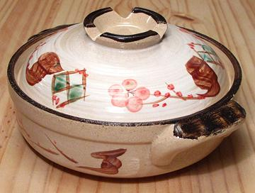

Donabe - Clay Pot
This is the traditional pot for cooking hot-pot dishes in Japan. It is
made from a special clay, and like all clay pots, needs careful treatment
(see cautions and instructions below). They can be used only on open flame,
not electric coils. There is a non-traditional Donabe called "Kikka Blue
Donabe Casserole" that can be used on electric coils. None can be used
on an induction range.
this type of pot is used for hot-pot dishes such as Shabu Shabu, but
also for various soups, stews, and braised dishes. It can also be used
for cooking rice, and is highly thought of for that purpose.
More on Japanese Kitchen Gear
Servings
- A 12 inch (30 cm) Donabe is generally sufficient to serve 4 to 5 people.
The photo example is a 7 inch (18 cm) which will serve 2 people.
Cautions
- Use only on open flame. If you have an electric stove, use a portable
butane stove for cooking with a Donabe.
- Be gentle with the heat, and do not expose the pot to sudden changes
in temperature. Cooking on medium to medium-low heat is recommended.
When it boils, turn the heat to low.
- Do not heat the Donabe without food or liquid in it.
- Clean with warm water and a sponge. Do not soak. Don't use soap or
detergent unless you must, and then use the minimum that will work.
- Season before first use.
Seasoning
- Fill Donabe with warm water to about 80% of volume.
- Put in about 3/4 cup of cooked rice.
- Bring to a boil slowly over medium-low heat, then turn to low heat and
keep barely at a simmer for about 20 minutes.
- Turn off the heat and allow it to cool to room temperature naturally.
- Pour out the rice and rinse with clean water. Dry with a clean cloth, and
then set it out to dry naturally overnight.
Hairline Cracks
- Repeat the seasoning process which should close hairline cracks. If the
pot leaks after seasoning, you will need a new one.
kp_donabe 220312 ©Andrew Grygus - agryg@aaxnet.com
- Linking to and non-commercial use of this page permitted
All images not otherwise attributed are ©
cg1.